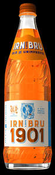

Trade Mark Journal No.2025/017 25 April 2025
UK00004189691 15 April 2025 (32)

- Class 32
- Beers; mineral and aerated waters and other non-alcoholic beverages; fruit beverages and fruit juices; syrups and other preparations for making beverages; aerated fruit juices; aerated water; alcohol-free beers; alcohol-free wine; ales; aloe vera drinks, non-alcoholic; aperitifs, non-alcoholic; apple juice beverages; beer-based beverages; beer-based cocktails; beverages consisting of a blend of fruit and vegetable juices; bitter lemon; carbonated beverages, non-alcoholic; cider, non-alcoholic; cocktails, non-alcoholic; coffee-flavored soft drinks; cola beverages; concentrated fruit juices; concentrates for making fruit beverages; concentrates for making fruit juices; concentrates, syrups and powders used in the preparation of soft drinks; cream soda; dry ginger ale; energy drinks; essences for making beverages; flavored mineral water; flavored water; frozen carbonated beverages; frozen fruit-based beverages; fruit-based beverages; fruit cocktails, non-alcoholic; fruit concentrates and purées used for making beverages; fruit-flavored carbonated beverages; fruit-flavored soft drinks; fruit juice bases; fruit juice concentrates; fruit squashes; ginger beer; grape juice beverages; iced fruit beverages; isotonic beverages; kvass [non-alcoholic beverage]; lemonades; low calorie soft drinks; mineral water [beverages]; mixed fruit juices; non-alcoholic beverages; non-alcoholic beverages containing fruit juices; non-alcoholic beverages containing vegetable juices; non-alcoholic beverages flavored with coffee; non-alcoholic beverages flavored with tea; non-alcoholic beverages fortified with vitamins; non-alcoholic cordials; nutritionally fortified beverages; nutritionally fortified water; pineapple juice beverages; powders used in the preparation of fruit-based beverages; powders used in the preparation of soft drinks; smoothies; soda pops; soda water; soft drinks; sparkling water; sports drinks; still water; spring water; vitamin enriched sparkling water [beverages]; waters [beverages].
A.G. Barr P.l.c.
Representative: Stobbs